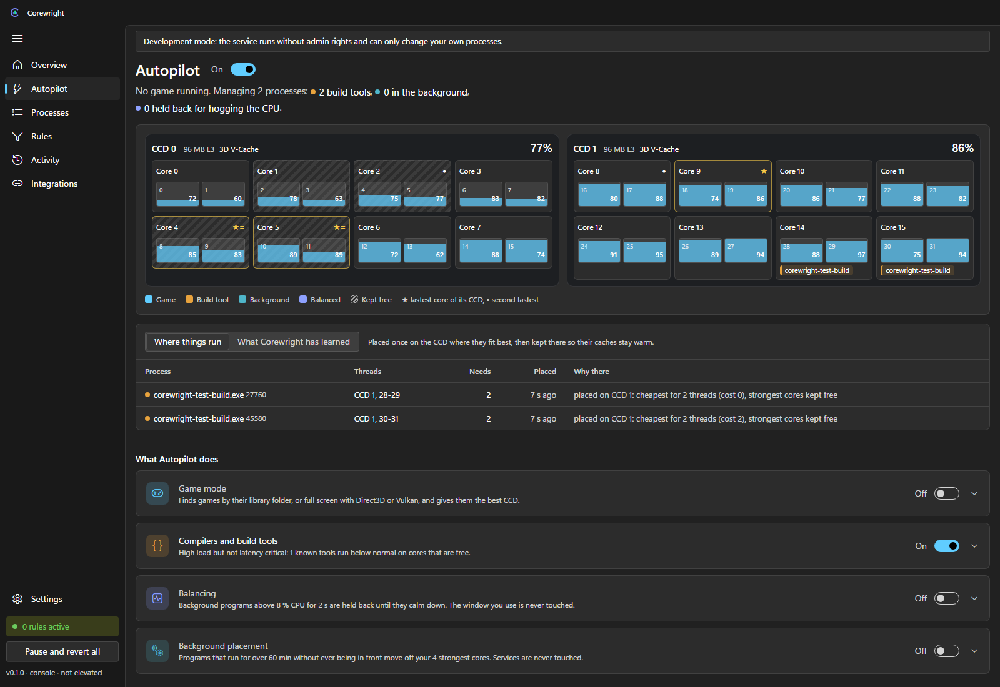
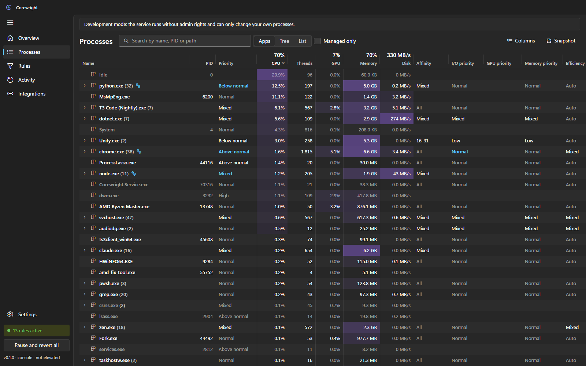
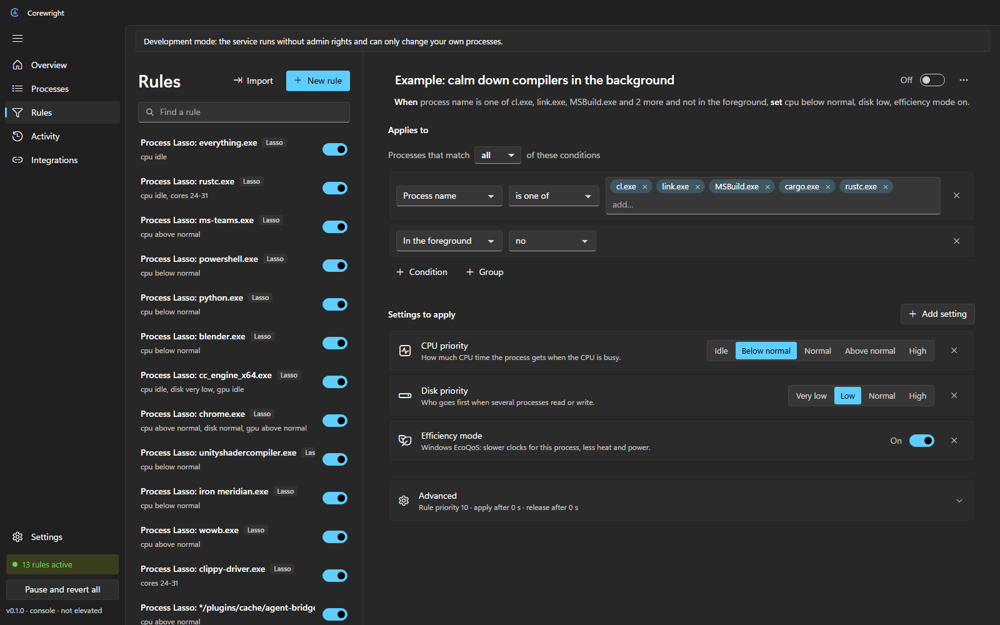
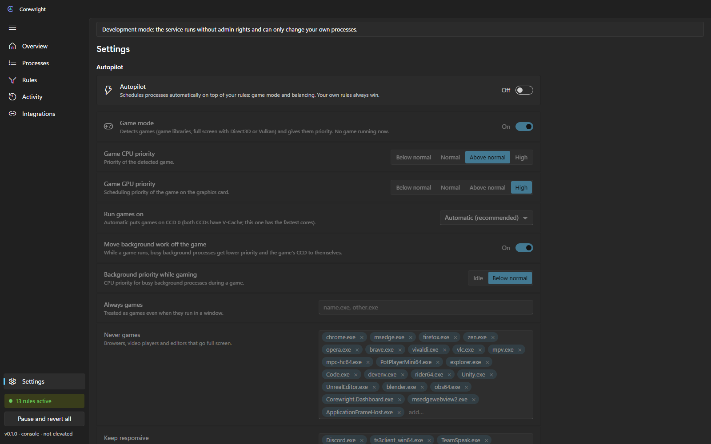

Bring your Process Lasso setup
One click imports your prolasso.ini, including command-line patterns. Anything Corewright cannot express yet is listed, never silently dropped. Re-importing replaces only the previous import and keeps your own rules.
Corewright is a process manager for Windows with a real rule engine. Priority, cores, I/O, GPU, memory and efficiency mode are decided by rules you can read, and put back the moment no rule wants them.
Pre-release 0.1 Free and open source. No installer yet; build it from source.
Tools like Process Lasso set fixed values per process. Corewright decides with rules: conditions on anything you see in the process list, such as name, path, command line, parent, CPU or memory use, the foreground window, or facts pushed by other apps.
Each setting of each process belongs to the highest-priority rule that sets it, so different rules can own different settings of the same program. The first time Corewright changes a setting it remembers the original value. When no rule claims that setting any more, the original goes back. Pausing, editing rules or stopping the service reverts everything.
Sustain and release times keep rules from flapping, and the Explain view shows for every process which rule set what and which rules were overruled.
game.exe, explained
| Setting | Owned by | Now | Original |
|---|---|---|---|
| CPU priority | Your rule Games high | High | Normal |
| Cores | Autopilot game mode | CCD 0 | All |
| I/O priority | Your rule Games high | High | Normal |
| Efficiency mode | No rule | Windows decides |
When the game exits or a rule stops matching, the original column is written back.
0-7,16, or CPU-aware tokens such as vcache-ccd and best-cores:4.Critical system processes such as csrss, lsass and dwm are never touched. A process is identified by its ID and creation time, so a reused process ID can never hit the wrong program.
Corewright reads your processor once at start: the CCDs from their L3 cache groups, 3D V-Cache from the cache size, physical cores and SMT threads, P- and E-cores, and the strongest cores from the CPPC ranking, the same ★ and • Ryzen Master shows. Autopilot uses that picture to place work. It never writes to a process itself; it generates low-priority rules, so your own rules always win. It is off until you turn it on.

Finds games in your game libraries (Steam, Epic, GOG, Xbox and others), by full screen with Direct3D or Vulkan loaded, or from your own list. The game gets priority and its CCD: the V-Cache CCD on single V-Cache parts, otherwise the fastest one. Busy background work moves off it.
Background work is placed once on the cheapest CCD and stays there so its caches stay warm. It only moves when a game claims the CCD or its cores stay saturated while another CCD idles.
Like ProBalance, but built on the rule engine: background programs that stay above a CPU threshold get lower priority until they calm down. The window you use and Windows services are never touched.
Compilers, linkers and shader compilers carry heavy load but are not latency critical. They run below normal with low I/O priority on free cores, without efficiency mode, so builds stay fast.


One click imports your prolasso.ini, including command-line patterns. Anything Corewright cannot express yet is listed, never silently dropped. Re-importing replaces only the previous import and keeps your own rules.
A plain HTTP API on 127.0.0.1 with a bearer token that changes at every start. Read processes and system data, edit rules, or push facts that rules react to:
curl -X PUT http://127.0.0.1:47830/api/v1/facts/obs.recording \
-H "Authorization: Bearer <token>" \
-H "Content-Type: application/json" -d '{"value":"true"}'| Service, idle | 0.01 % CPU | 17 MB |
|---|---|---|
| Tray icon | no timers | 5 MB |
| Window | only while open, then it exits | |
Expensive data such as GPU counters and per-thread load is only collected while the window is open.

Light and dark theme, your accent colour, Segoe UI Variable and Fluent icons, a title bar drawn into the app, and a tray icon with a modern menu. Settings save as you change them, the way Windows Settings does.
Corewright is a pre-release, version 0.1. Rules, monitoring, Autopilot and the window work today. There is no installer or binary release yet; it is in progress, together with per-process network usage and CPU Sets for machines with more than 64 threads.
Needs Windows 11 (Windows 10 works), the .NET 10 SDK, Node.js and the Visual Studio C++ build tools.
git clone https://github.com/rennerdo30/corewright
cd corewright
build.batbuild.bat builds everything and starts the service, the tray icon and the window. Tray icon, then Exit Corewright, stops it and reverts every change.
Installers will be published on GitHub as soon as the first release is ready.